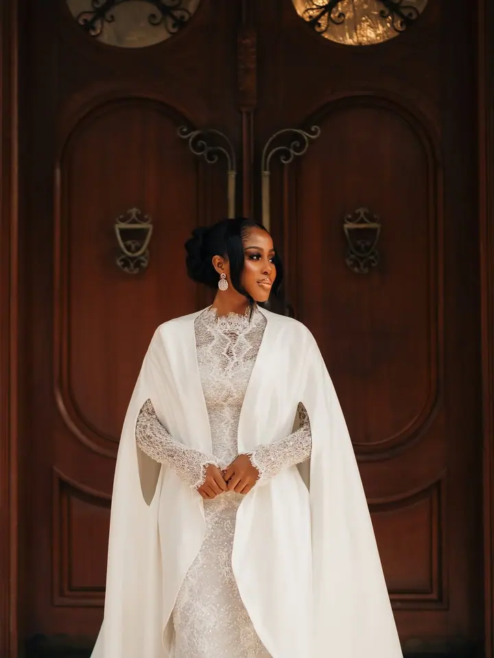
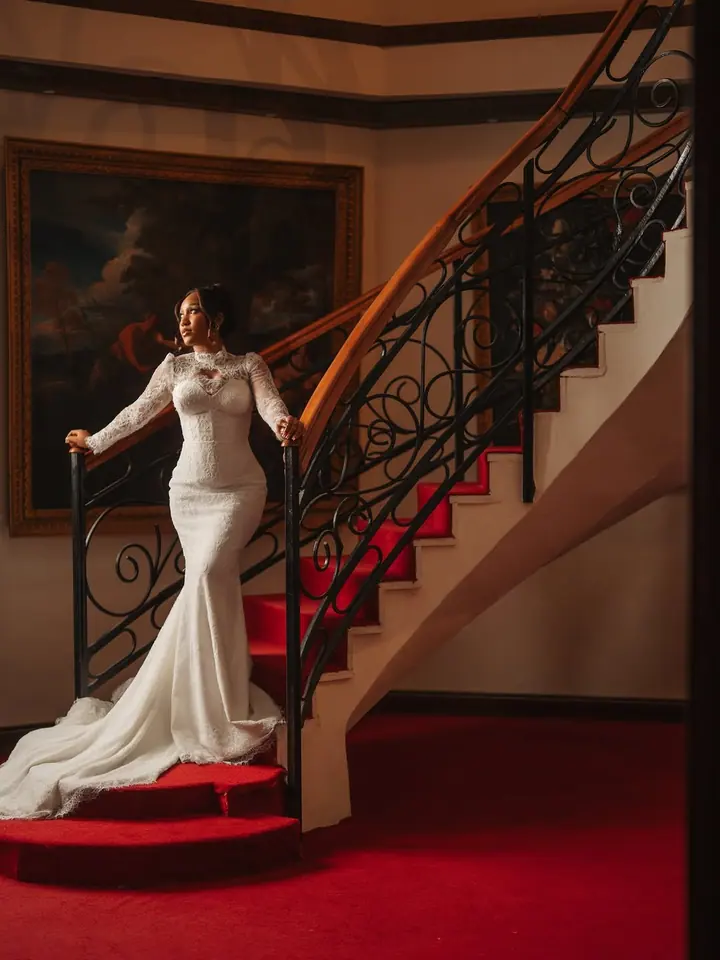
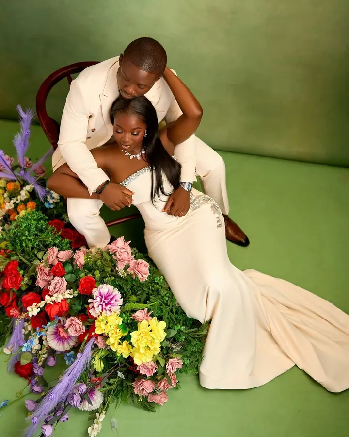
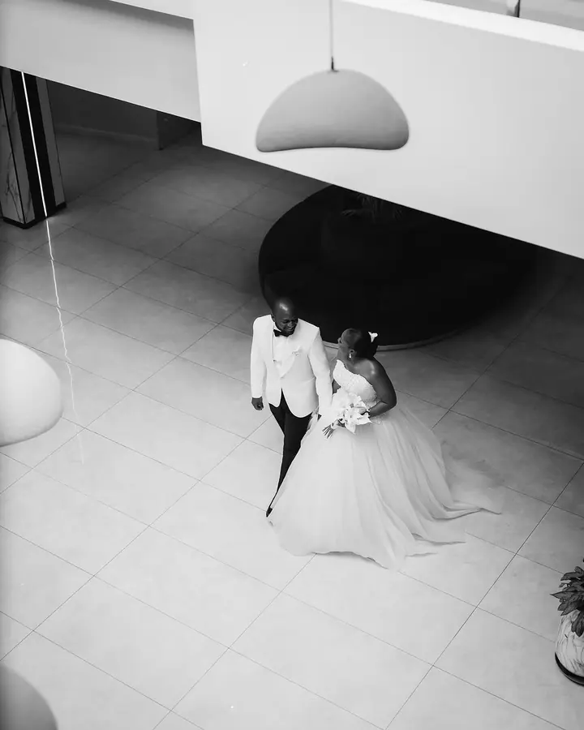
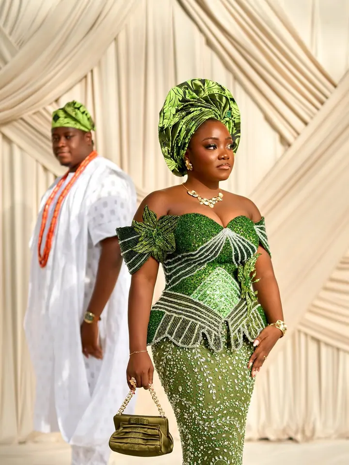
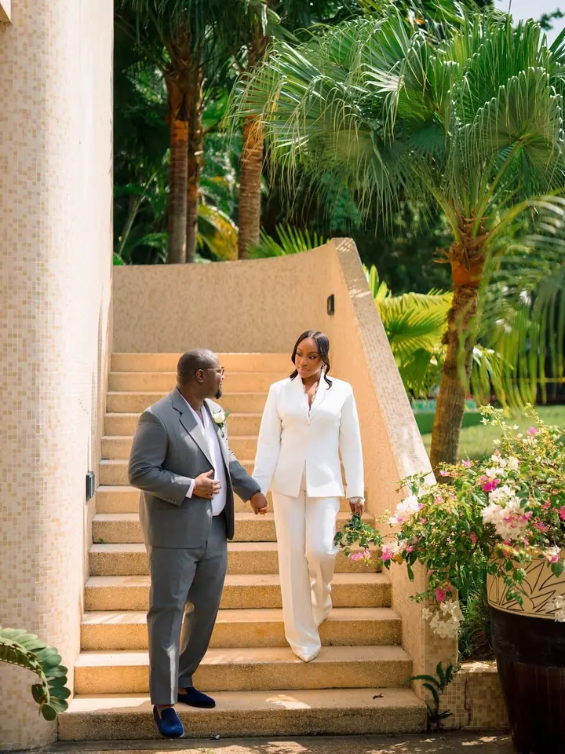

Svatby a zásnuby
Od předsvatebního focení až po samotný svatební den. Chci zachytit pocity, atmosféru, klidné i bláznivé chvíle a detaily, které jsou jen vaše.





Jmenuji se Jeff a jsem hlavní fotograf Buklaw Photography v Lagosu. Fotím svatby, portréty a rodiny a nejvíc mě baví opravdové spojení s lidmi, které mám před objektivem.
Více o mně
„Jednoduchost a elegance na mě zaberou pokaždé.“
— Jeff
Od předsvatebního focení až po samotný svatební den. Chci zachytit pocity, atmosféru, klidné i bláznivé chvíle a detaily, které jsou jen vaše.
Nefotím upravenou verzi vás, ale vaši skutečnou podstatu. Přirozeně, jednoduše a elegantně.
Profesionální fotky pro váš profesní úspěch. Čisté a ostré snímky pro jednotlivce i firmy.
Balíčky Mini, Midi a Extended pro rodiny od 3 do 16 lidí, s až dvěma outfity a upravenými fotkami. Fotit můžeme v ateliéru, u vás doma nebo na jiném místě.
Jsem Jeff, hlavní fotograf Buklaw Photography se sídlem v Lagosu v Nigérii. Rád se potkávám s lidmi a pomáhám jim vyprávět jejich příběh skrze fotografie. Se svými klienty si chci vybudovat opravdový vztah a přitom vytvořit fotky, které nezestárnou.
Říkám o sobě, že jsem stará duše v mladém těle. Jsem minimalista, jednoduchost a elegance na mě zaberou pokaždé. Věřím, že každý je jedinečný, a právě tuhle jedinečnost a originalitu nejraději zachycuji na fotkách. Autenticita, jednoduchost a elegance jsou slova, podle kterých se snažím žít.
A když zrovna nefotím? Miluju dobré jídlo. Cokoli, kde se dá objevit něco nového a chutného, jdu do toho. Doufám, že se brzy potkáme i s vámi.
Vyplňte kontaktní formulář, napište e-mail nebo zprávu na Instagramu. Odpovídáme do 24 až 48 hodin.
Probereme termín, místo a to, co je pro vás důležité. U rodinného focení si vyberete balíček a místo: ateliér, domov, nebo jiné místo.
Dávám jednoduché pokyny, aby bylo focení snadné a v klidu. Zachycuji pocity, atmosféru i detaily, které vás dělají jedinečnými.
Každou fotku profesionálně upravíme v našem stylu, s jednotnými barvami, tónem i náladou. Fotky dostanete v online galerii.
Věříme, že každý je jedinečný a dokonalý po svém. Nechceme zachytit upravenou verzi vás, ale vaše opravdové já, krásně a přirozeně.
Co nejdříve. O termíny je zájem a rezervace potvrzujeme podle pořadí, v jakém přijdou.
Ano. Sídlíme v Lagosu, ale vyrazíme kamkoli v Nigérii i do zahraničí. Pokud je potřeba, účtujeme cestovné a ubytování.
RAW soubory jsou k dispozici za příplatek. Každá fotka, kterou dostanete, je ale profesionálně upravená v našem typickém stylu.
enquiries@buklawphotography.com
Lagos · Nigérie · po celém světě